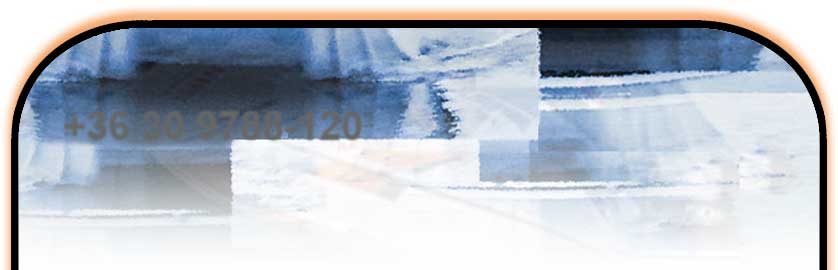

english language is avalaible:
+36 30 9788-120

Kezdõlap
Miért egy katamarán?
Modellek
Szerelvények
Árlista
Tesztek
Motorcsónak
Villanymotor
Videók
K maxxi joker cabin
K mini boat&box
K maxxi
K maxxi joker
K1 fisherman
K maxxi delfin
K2 party
K maxi party
Dodgem
Használt hajó
Az ikonra kattintva frissítse az Adobe Flash Player-t
Content on this page requires a newer version of Adobe Flash Player.